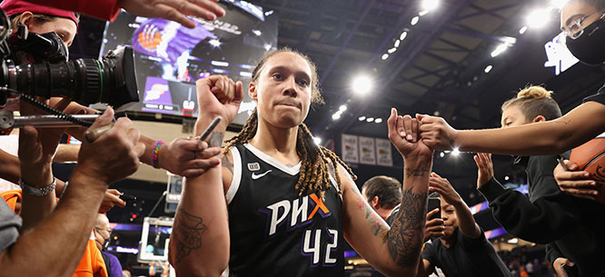

Brittney Griner Comes Home
The Russian government’s decision to use the WNBA star as a bargaining chip illustrates the weakness of its diplomatic efforts.

Women’s National Basketball Association star Brittney Griner won’t be spending Christmas in a
Russian penal colony. Since Griner’s arrest in February at a Moscow airport, there have been plenty
of opportunities for the Russian Federation to reduce her nine-year prison sentence for bringing
narcotics into Russia. Finally, one was taken: after months of advocacy and an outpouring of support
from her fellow players in the WNBA, Griner was released and returned to the United States on
Thursday.
Griner’s value as a hostage was undeniable. She came with the kind of name recognition that no other
Americans held by Russian authorities, including former U.S. Marine Paul Whelan, had. In a prisoner
exchange, Griner was Russia’s best bargaining chip to secure the release of arms dealer Viktor Bout,
who will now return to his home country as part of a deal between the U.S. and Russian governments.
The long-run benefits of keeping Griner imprisoned were a different story. Griner was a major star
in Russia’s women’s basketball league; holding her in prison only made it less likely that other
international sports stars, especially women and African Americans, would want to come to Russia.
Indeed, Putin’s treatment of Griner is as clear an indication as any of what separates his
right-wing nationalist regime from the diplomatic efforts of the Soviet era, when the government
reached out to prominent African Americans in order to use them to illustrate the depth of American
racism.
In 1922, for example, just five years after the Russian Revolution, the Soviet Union invited the
Black American poet Claude McKay for a visit. He spoke openly to Soviet audiences about the racism
that Black people living in the United States were subject to. In the 1930s, the Soviets continued
their outreach to Black Americans. In 1932, poet Langston Hughes traveled to Moscow as part of a
group of over twenty African Americans who had been hired to act in a Soviet film about racism in
the American South. Then in 1934, the actor and political activist Paul Robeson came to Russia at
the invitation of Sergei Eisenstein, the famed director of Battleship Potemkin.
Robeson was a prize the Soviets held onto as long as possible. He was a featured speaker at the 1949
Soviet Union–sponsored Paris Peace Conference, where he denounced an America in which lynching and
legal segregation still existed.
Despite her civilian status, Griner’s treatment more closely resembled that of Francis Gary Powers,
the pilot of an American U-2 spy plane that was shot down over the Soviet Union in 1960 on a
high-altitude reconnaissance mission. Powers was kept behind bars for two years because President
Dwight Eisenhower refused to apologize for the mission. Soviet Premier Nikita Khrushchev waited
until John F. Kennedy became president before allowing Powers to be released (along with an American
student who had been jailed by East German authorities) in exchange for Soviet spy Rudolf Abel.
Perhaps Putin was similarly hoping for a change in American government and the reelection of Donald
Trump in 2024. He could have released Griner as a gesture of goodwill to a man he thought of as any
ally. Now it appears that Trump’s declining fortunes no longer make him the asset he once was. Putin
can take some satisfaction in sewing bitterness by not making Whelan’s release part of the deal. But
his course reversal raises the hope that he is aware of when, as with his Ukraine policy, he has
backed himself into a corner from which there are no graceful exits.